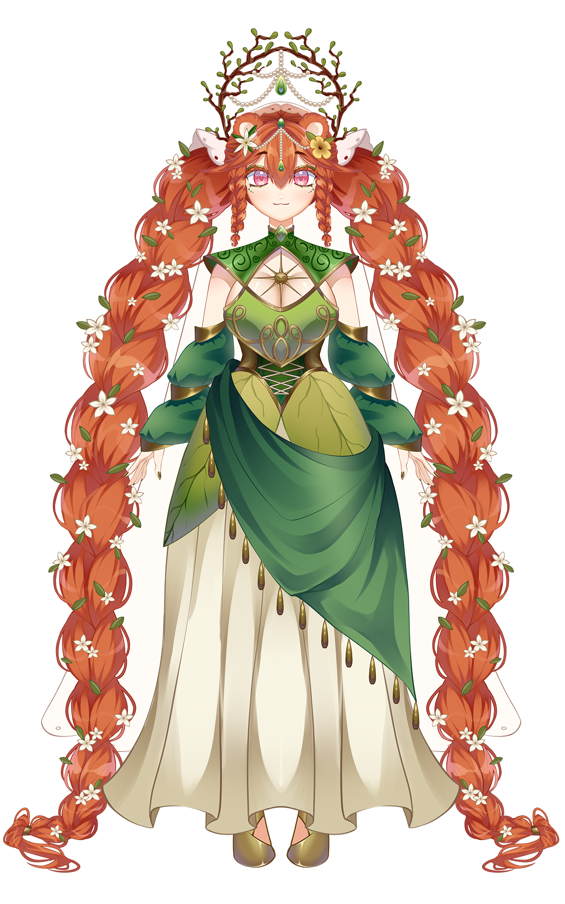

Vtuber Galleta, Lider de la Pandilla Galleta
País:
Perú
Cumpleaños:
16 de Agosto
Altura:
1,58 m
Comida favorita:
Galletas
Comida que detestas:
Granadilla
Videojuego favorito:
Valorant
Serie favorita:
Arcane
Gustos
musicales:
musicales:
Pop, Kpop, Openings y Endings de Anime, Epic el Musical
Anime favorito:
Haikyuu!
Signo Zodiacal:
Leo
Animal favorito:
Zorro
Color favorito:
colo
Modelo:
PROYECTO AR-AI.I (artista y rigger)
Hashtag:
Arte: #cukibujo Arte NSFW: #cukirotica